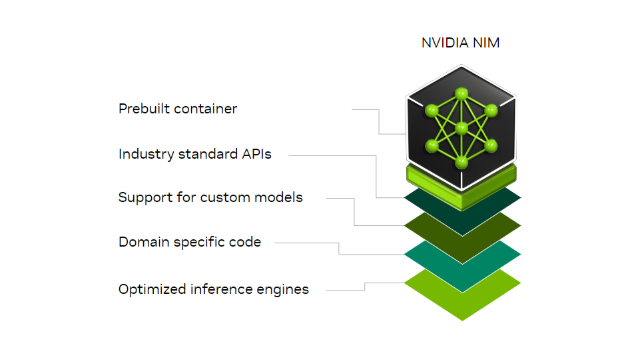
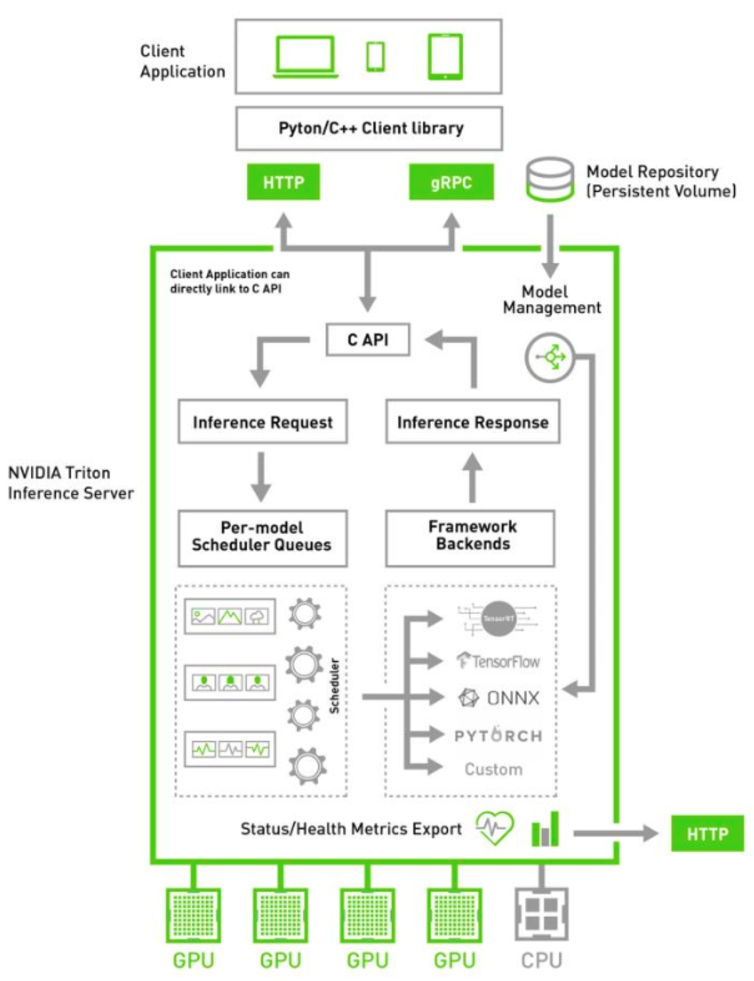

NVIDIA NIM Framework für CNN-Entwicklung
Das NVIDIA NIM (Neural Information Modeler) Framework ist ein hochleistungsfähiges, modulares Werkzeug für die Entwicklung, das Training und die Bereitstellung von Deep-Learning-Modellen, einschließlich Convolutional Neural Networks (CNNs). 
Quelle:NVIDIA Developer Program
Architektur und Module
Datenvorverarbeitungsmodul
Zweck: Vorbereitung und Vorverarbeitung des Datensatzes für das Training.
Komponenten: - Datensatz-Lader (Integration mit NVIDIA DALI für effiziente Datenverarbeitung) - Vorverarbeitungspipelines (Skalierung, Rotation, Zuschneiden, etc.) - Augmentierungstechniken (zufällige Spiegelungen, Helligkeitsanpassungen)
Modelldefinitionsmodul
Zweck: Definition der CNN-Architektur unter Verwendung der Modellierungswerkzeuge des NIM-Frameworks.
Komponenten: - Eingabeschicht für Bilder - Faltungsschichten mit ReLU-Aktivierung - Pooling-Schichten (Max-Pooling oder Average-Pooling) - Vollständig verbundene Schichten für die Klassifizierung - Dropout- und Batch-Normalisierungsschichten zur Überanpassungsprävention und Trainingsstabilität
Trainingsmodul
Zweck: Handhabung von Modelltraining und Optimierung.
Komponenten:
- Verlustfunktionen (Cross-Entropy, MSE, etc.)
- Optimierer (SGD, Adam oder momentum-basierte Optimierer mit NVIDIA Apex für Mixed-Precision-Training)
- Lernraten-Scheduler für dynamische Anpassung
- Überwachungswerkzeuge (Tensorboard-ähnliche Funktionen)

Quelle:NVIDIA Developer Program
Inferenzmodul
Zweck: Optimierung des trainierten Modells für Inferenz und Bereitstellung auf unterstützter Hardware.
Komponenten: - TensorRT-Integration für Hochleistungs-Inferenz - Modellkonvertierungswerkzeuge für den Export in das ONNX-Format 
Quelle:NVIDIA Developer Program
Verteiltes Trainingsmodul
Zweck: Skalierung des Trainings über mehrere GPUs oder Knoten.
Komponenten: - NVIDIA NCCL für Multi-GPU-Kommunikation - Unterstützung für Frameworks wie Horovod zur Verteilung von Berechnungen
Evaluierungs- und Metrikmodul
Zweck: Bewertung der Modellleistung auf Testdatensätzen.
Komponenten: - Rechner für Genauigkeit, Präzision, Recall und F1-Score - Visualisierung der Konfusionsmatrix
Programmiersprachen-Empfehlung
- Python: Hauptsprache für die Entwicklung
- Umfangreiche Unterstützung für Deep-Learning-Bibliotheken (PyTorch, TensorFlow)
- Integration mit NVIDIA-spezifischen Tools (CUDA, cuDNN, DALI)
- C++: Für leistungskritische Abschnitte und optimierte Bereitstellung
NVIDIAs Skalierungskonzept
Horizontale Skalierung (Datenparallelität)
- Verteilung des Modells über mehrere GPUs/Knoten
- Jede verarbeitet einen Teil der Daten
- Nutzt NVIDIA NCCL für schnelle Inter-GPU-Kommunikation
Vertikale Skalierung (Modellparallelität)
- Aufteilung des Modells auf mehrere GPUs
- Verschiedene GPUs bearbeiten verschiedene Schichten/Teile
- Ideal für große Modelle, die den Speicher einer einzelnen GPU übersteigen
Mixed-Precision-Training
- Nutzt NVIDIA Tensor Cores und Apex
- FP16-Präzision mit FP32 für kritische Berechnungen
- Reduziert Speicherverbrauch und verbessert Durchsatz
Optimiertes Datenladen
- NVIDIA DALI für Vorverarbeitung
- Direkte GPU-Datenzuführung
- Minimiert CPU-Engpässe
TensorRT für Inferenz
- Optimiert trainierte Modelle
- Bietet Quantisierung und Layer-Fusion
- Verbessert Geschwindigkeit und Speichereffizienz
Hardware-Optionen
GPUs für Training
- NVIDIA A100 (bis zu 80GB Speicher, MIG-Unterstützung)
- NVIDIA H100 (Modelle im Großmaßstab)
- NVIDIA RTX 4090 (kleine bis mittlere Modelle)
GPUs für Inferenz
- NVIDIA T4 (Edge-Geräte und Inferencing)
- NVIDIA Jetson AGX Orin (eingebettete Systeme)
Rechenzentrum-Hardware
- NVIDIA DGX-Systeme (vorkonfigurierte A100-Cluster)
- NVIDIA SuperPOD (Hyperscale-Training)
Zusammenfassung
Das NVIDIA NIM Framework bietet ein umfassendes Ökosystem für CNN-Entwicklung, das Python/C++-Programmierung und Hardware-Beschleunigung nutzt. Die Skalierungsstrategien und Werkzeuge wie TensorRT und DALI optimieren sowohl die Trainings- als auch die Inferenzleistung. Die vielfältigen Hardware-Optionen ermöglichen Lösungen von Edge-Geräten bis hin zu Rechenzentren und machen es für verschiedene Einsatzszenarien anpassbar.